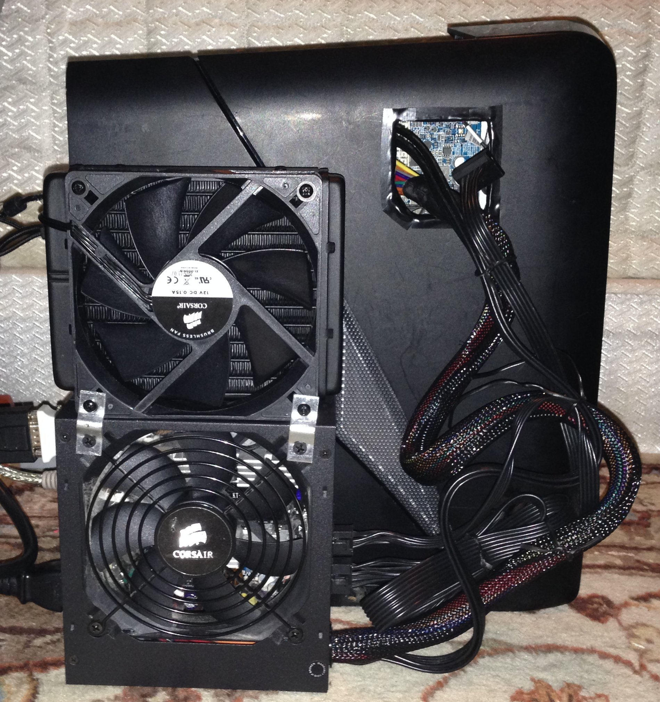
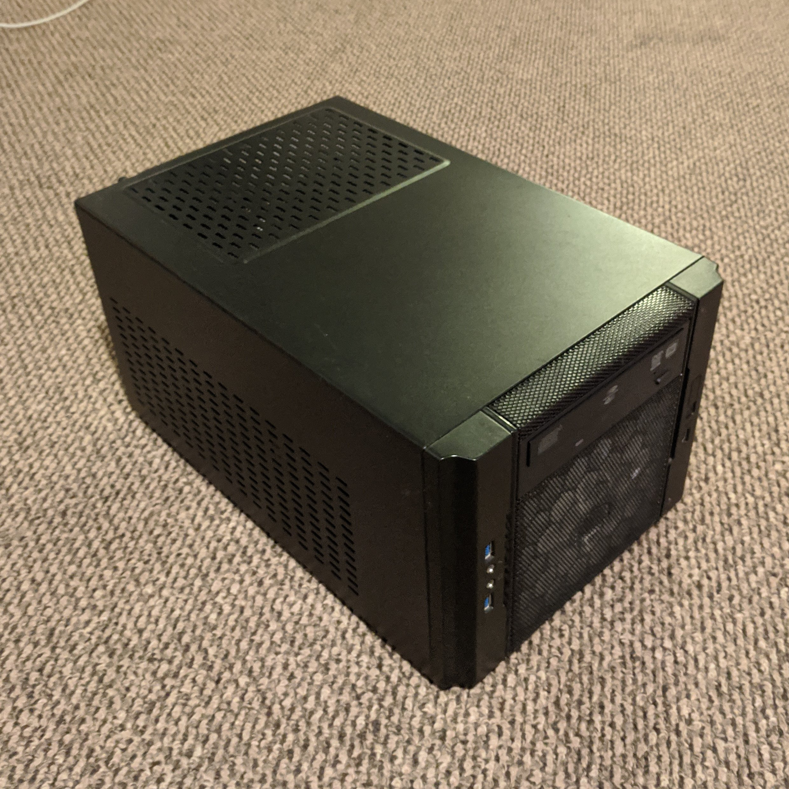
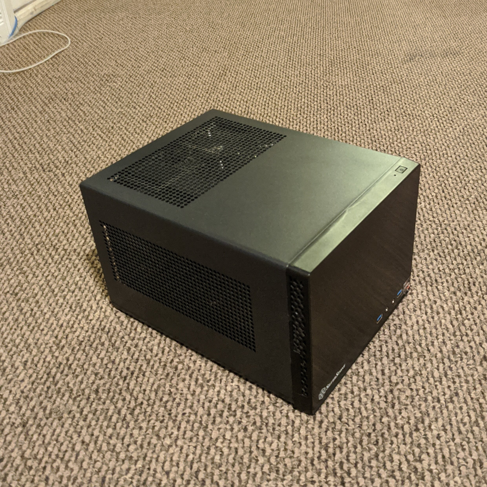
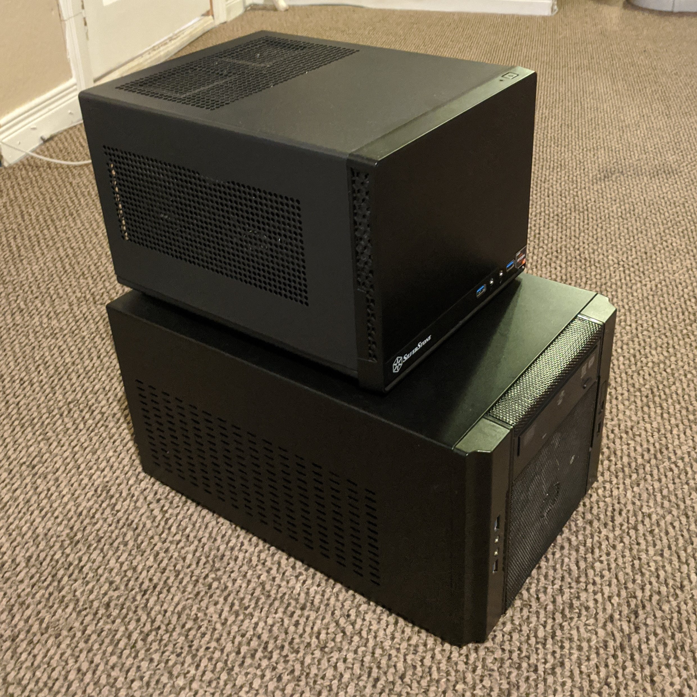

My personal computer is another pet project of mine. I've been consistently upgrading and keeping it up-to-date for years. Much akin to the Ship of Theseus, almost none of its original components remain, yet to me it feels that this computer is the very same as the one I bought 5 years ago.
The computer started off as a prebuilt, I wasn't very knowledgeable nor confident in my ability to build a custom PC, so I bought a rather overpriced Alienware machine back in the beginning. It started off with the following specs:
The computer served me well for a short time, but eventually I came across a cheap GTX 760 gpu, and I decided to try my hand at my first upgrade. Problem was, the proprietary
power supply had no extra PCIE power connectors, and I wasn't even certain it would handle the power draw of the 760 even if I added one, so my next move was to upgrade the power
supply. I bought a Corsair 750W PSU that still serves me to this day.
Now I had a new PSU and GPU, but I had another problem. The pre-built case was way too tiny to fit anything new in there, so I had to gut a lot of support structure with my dremel
to get the new GPU to fit. The PSU simply couldn't go inside the case, so I bought some industrial velcro and stuck it onto the side. I cut a hole through the side of the case to
route the cables. There is a picture of that beautiful mess down below.
After a while with my new PSU and GPU I decided I wanted to upgrade my CPU cooler from air to water cooling. I opted for a Corsair closed-loop AIO cooler which is still in use today.
It too couldn't fit in the case, so I bolted it on to the power supply already velcroed to the outside. The machine was starting to look like an abomination.
Afterward that I decided to get a proper case to fit all my components and in the years since then I've been downsizing my case in an attempt to build a PC that can still throw a punch
while maintaining the smallest volume footprint possible. My future plans include installing an m.2 SSD, downsizing my 3.5" drive to a 2.5", downsizing my ATX psu to an SFX form factor,
and switching back to air cooling if the next case can't handle a radiator for the water cooler.
Current Specs:
I'm running a dual-boot installation of Arch Linux and Windows, using rEFInd as my boot manager. I switched from grub to rEFInd and it has been excellent in detecting new boot instances
and is very simple to install and configure. My file storage is divided among 3 separate drives, a 500GB SSD, 250GB SSD, and 3TB HDD.
Linux and the base Windows partition share the 500GB SSD. Linux gets 400GB out of the 476GB of usable space since it uses a core library structure for installing programs, so it is very
difficult to install linux programs on a partition outside of root. Windows on the other hand very easily allows programs to be installed on other drives, since Windows programs
are often self-contained packages of files. Linux comes with the advantage of less duplicate libraries, freeing up disk usage, but Windows comes with the advantage of program location
flexibility. Each OS has their tradeoffs. Windows only gets around 70GB of storage for it's base OS, but reserves the entire second 250GB for itself to hold it's programs. This
setup lets me load both the OS and software entirely off of an SSD no matter which OS I'm using, which yields noticeable performance benefits compared to loading from a harddrive
due to faster read and write times.
Both operating systems share the 3TB drive, and that is where all of my personal files like documents and pictures etc. are stored. Getting both operating systems to play nice was
a bit tricky at first. Windows does not support the ext4 filesystem that Linux primarily uses, and Linux does not come with native support for the NTFS filesystem type that Windows
prefers. The handy ntfs-3g package for linux offers compatabilty with NTFS drives, so with an edit of the FSTAB file the Linux system can mount the HDD as an NTFS on boot, and the system
is then capable of read/write. Both OSs now work in harmony and my files can be accessed on each OS in the same location, making switching between the two more seamless. So far I haven't run
into any nasty permission issues between the two and fingers crossed things stay that way.
Version 1:
Version 2:
Version 3 (Current):
Comparison of V2 and V3:
